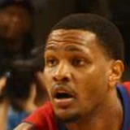

Chuck Person:
“I compare him at this stage of his career to Jeremy Lin. I think he's better at this point in his career than Jeremy Lin at the same age.”
3 quotes from Chuck Person about 4 other people around the NBA, newest first. Each one links to its original source.

Devin Ebanks1 quoteChuck Person:
“I compare him at this stage of his career to Jeremy Lin. I think he's better at this point in his career than Jeremy Lin at the same age.”
Chuck Person:
“It will be different from what Phil [Jackson] had us do. Phil gave us each certain teams to scout, where Mike has us each learn the entire league. Our scouting responsibilities will be on a game-by-game basis, we’ll just rotate it that way. In terms of personal assignments, we are just going to coach the team. All coaches are required to know both sides of the ball; obviously we have our different strengths we bring to the table. My strength is on the defensive side of the ball. The system we are going to implement will be similar to last season because it’s a system I learned from Mike Brown. So there won’t be much change in the defensive philosophy.”
Caracter, 6-9 and now 270 pounds -- after losing more than 30 pounds since college -- added 20 points, 10 rebounds and two blocks in the Lakers' 89-84 loss to the Pistons.
“I think both Caracter and Ebanks showed themselves capable of being in the league and being on the roster,”